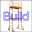

 Macro Build Utility |
| Description |
|---|
| This macro provides a Build Utility to assemble multiple project files into one project file. |
| Auteur |
| Piffpoof |
| Liens |
| Recettes macros Comment installer une macro Comment ajouter une barre d'outils |
| Version |
| 1.0 |
| Date dernière modification |
| 2015-01-21 |
This macro is intended for use on large projects, ones involving hundreds of objects. It's use on a small single file project would be pointless and unnecessary. However on a large project with many objects and many files to be merged into the final one, it will save time, avoid the user being involved in repetitive actions, and remove human errors.
All the code for buildUtility.FCMacro is in one macro. So installation is comprised of copying the code to the appropriate Macro directory and invoking the Build Utility from the Macro menu, the Python console or a toolbar button (the preferred method).
The Build Utility works on the same principals as the build files that are used to assemble large software system (like FreeCAD). A text editor is used to create a text file which adheres to the formats required by the Build Utility. The Build Utility then simply reads each line of the text file and performs the actions specified by that text file.
The macro asks the user for a "build file". It then parses that build file, there are 3 legal line types:
The file extension for Build Utility file is ".FCBld". This is so file do not get mixed up with other uses and applications.
Any file specified in the build file is assumed to have the extension ".FCStd" If the line starts with a directory then the project file is read from that subfolder. Otherwise it is assumed the line specifies a project file. Directories within directories are supported so nesting of arbitrary depths is possible. The file specification format is the "Unix" style with different levels separated by the forward slash character "/".
Any missing file is printed onto the Report view. Any missing directory is printed onto the Report view.
A new document is created and each project is "Project Merged" into that new and empty document. The document is not saved at the end, this is left for the user if desired. If the file does not exist then the file name is Printed to the Report view
There really isn't a GUI at all for this macro. The macro reads a text file that has been prepared with a text editor and produces a model in an output document. Other than clicking the button on the toolbar to start the process, there is no user interaction.
You are working with some other departments in your company to use FreeCAD to generate a large CAD model for an external client. To prepare for the upcoming presentation you need to integrate the models represented in the 'black' and 'blue' subsystems, the engineering department has responsibility for the 'green' and 'grey' subsystems and you have the 'metal' subsystem on your own computer. The client also uses FreeCAD and your design must integrate with their subsystems "red', and 'yellow'. The external client has told you that the Stacker Assembly is not ready for you to use so you comment it out in your build file.
There are a lot of directory paths to type in so you enter the commands into the Build Utility text file which means you can run it with a single click on a toolbar button.
The contents of the build file "buildFile.FCBld" shown below shows the file structure for the project described above.
#this is the build file for the complete assembly #============================== @sub-build-files - not presently implemented # first the top-level file metal # now some misc files ./black/black ./blue/blue # file does not exist zebra # folder does not exist /bear/bear # multiple files in one sub-folder ./engineering/green ./engineering/grey #multiple files in hierarchical folders ./externalModules/white ./externalModules/red/red #./externalModules/red/stackerAssembly - commented out as not currently loading ./externalModules/red/orange ./externalModules/red/level3/yellow
A summary of the file and how it is processed is:
#this is the build file for the complete assembly #==============================
@sub-build-files - not presently implemented
metal
./black/black ./blue/blue
#./externalModules/red/stackerAssembly - commented out as not currently loading
./externalModules/red/orange ./externalModules/red/level3/yellow
There is no GUI so there are no options. The only alternatives that exist are by using the 3 types of lines in the text file as described above.
To reiterate what was stated at the outset, there is no use for this macro on a small single file model. But for persons modeling a plane, locomotive, ship, building, physical plant, complex circuity there is a definitive use and advantage. By choosing the ".FCBld" file extension it is hoped a standard of sorts can be set for build files within FreeCAD. By reserving the "@" prefix character in the command file definition it is hoped that future use and (if needed) growth can be accommodated.
none (so far)
#
#Build Utility
# v 0.0 - build from files and files in sub-folders
#
#***********************************************************************************
# routine to read in a build file and merge all specified projects
"""
This function asks the user for a "build file". It then parses that build file, there
are 3 legal line types:
- lines starting with the comment character "#" which are ignored
- lines starting with the subfile character "@" which are ignored
Note:the "@" character is for future enhancement when sub-build files
will be handled
- all other lines which may be a project file or a subfolder (sub-directory)
If the line is a subfolder then the project file is read from that subfolder.
Otherwise it is assumed the line specifies a project file.
A new document is created and each project is "Project Merged" into that new and empty document.
The document is not saved at the end, this is left for the user if desired.
If the file does not exist then the file name is Printed to the Report view
"""
"""
Example file:
#this is a sample build file
#==============================
@sub-build-files - not presently inplemented
# first the top-level file
metal
# now some misc files
./black/black
./blue/blue
# file does not exist
zebra
# folder does not exist
/bear/bear
# multiple files in one sub-folder
./engineering/green
./engineering/grey
#multiple files in hierarchical folders
./externalModules/white
./externalModules/red/red
#./externalModules/red/stackerAssembly - commented out as not currently loading
./externalModules/red/orange
./externalModules/red/level3/yellow
"""
# import statements
import FreeCAD
import os.path
from PySide import QtGui
# UI Class definitions
# Class definitions
# Function definitionss
# Constant definitions
buildTargetDocument = "build_target"
commentTag = "#"
subfileTag = "@"
lineFeed = "\n"
subfolder = "./"
carriageReturn = "\r"
fileSeparator = "/"
fcFileExtension = ".FCStd"
fcFileExtensionUC = ".FCSTD"
fcFileExtensionLen = -6
# code ***********************************************************************************
buildFilePathName=QtGui.QFileDialog.getOpenFileName()[0]
if len(buildFilePathName) > 0:
# set up a new empty "build_target" document
FreeCAD.newDocument(buildTargetDocument)
FreeCAD.setActiveDocument(buildTargetDocument)
FreeCAD.ActiveDocument=FreeCAD.getDocument(buildTargetDocument)
guiDoc=FreeCADGui.ActiveDocument
#
lastFileSeparator = buildFilePathName.rindex(fileSeparator)
buildFilePath = buildFilePathName[: lastFileSeparator]
buildFileName = buildFilePathName[lastFileSeparator +1:]
#
buildFileContents = open(buildFilePathName,"r")
buildFileLines = buildFileContents.readlines()
buildFileContents.close()
#
for line in buildFileLines:
if line[0] == commentTag:
# line of internal comment
pass
elif line[0] == subfileTag:
# line of sub-build-file (not presently implemented)
pass
else:
# a line which should specify a FreeCAD project file
# - may be preceded by a sub-directory e.g. "./subdir309/"
# - project file may be missing file extension
#
# if line break at end of file spec then remove
if line[-1:] == lineFeed:
line = line[:-1]
if line[-1:] == carriageReturn:
line = line[:-1]
# if no FreeCAD project file extension supplied then append one
# make an uppercase comparison in case of mixed case
tempLine = fcFileExtension + line.upper()
if fcFileExtensionUC != tempLine[fcFileExtensionLen:]:
line = line + fcFileExtension
# if there is a leading subdirectory then remove "./" from beginning
if subfolder[0:2] == line[0:2]:
line = line[2:]
projectFileSpec = str(buildFilePath) + str("/") + str(line)
if os.path.exists(projectFileSpec):
guiDoc.mergeProject(projectFileSpec)
else:
FreeCAD.Console.PrintMessage('project file "' + projectFileSpec + '" not found' + "\n")
# set view back to "build_target", it is up to user to save it (if they want)
FreeCAD.setActiveDocument(buildTargetDocument)
FreeCAD.ActiveDocument=FreeCAD.getDocument(buildTargetDocument)
FreeCADGui.ActiveDocument=FreeCADGui.getDocument(buildTargetDocument)
FreeCADGui.SendMsgToActiveView("ViewFit")
FreeCADGui.activeDocument().activeView().viewAxometric()
#
#OS: Mac OS X
#Word size: 64-bit
#Version: 0.14.3703 (Git)
#Branch: releases/FreeCAD-0-14
#Hash: c6edd47334a3e6f209e493773093db2b9b4f0e40
#Python version: 2.7.5
#Qt version: 4.8.6
#Coin version: 3.1.3
#SoQt version: 1.5.0
#OCC version: 6.7.0
#
#thus ends the macro...
{kind=link}
{kind=link}